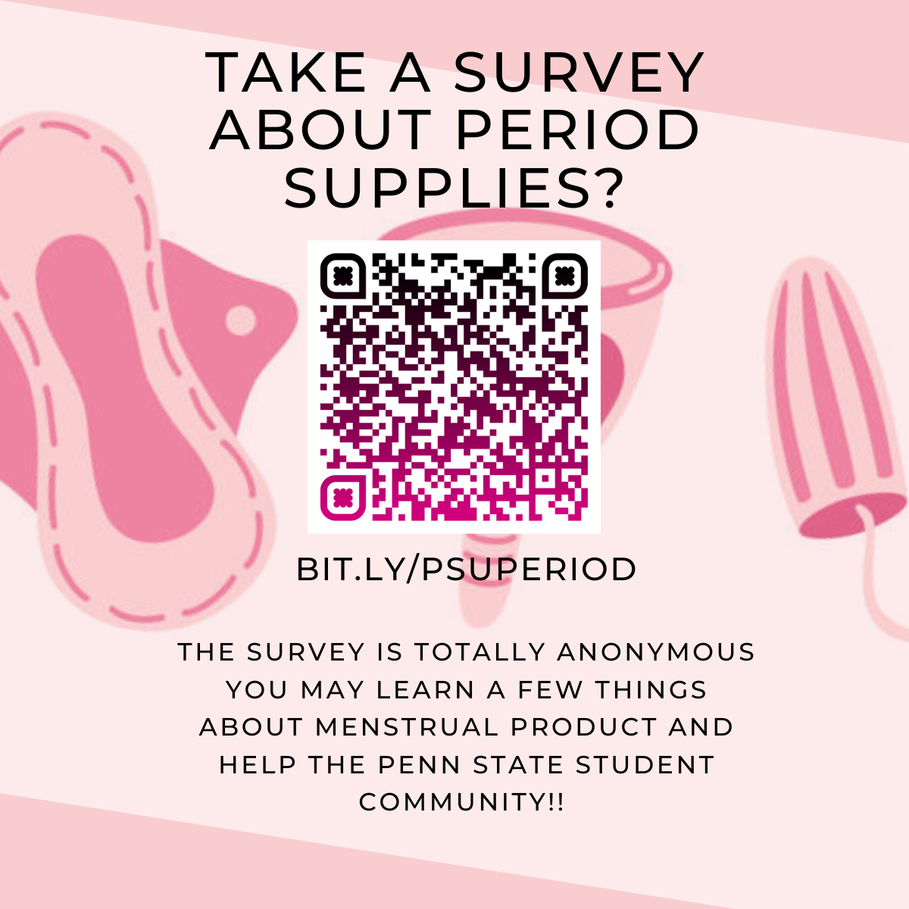

Care for women's health
For my senior project, I'm studying and researching the topic about menstruation products. In the summer of 2023, I accidentally opened the TikTok platform and read a story about a poor Chinese girl who died of cancer from using substandard tampons. She had no money and chose poor quality sanitary napkins, which caused her body to suffer serious damage. I was shocked and saddened, So I wanted to investigate the affordability and choice of menstrual products among American college students through the population of PSU college students, whether there are any psychological barriers to menstrual products, whether there are any allergies to menstrual products, and how they understand the relationship between menstrual products and environmental protection.
In order to accomplish this research project, I created a Google survey for all PSU college students and distributed it to different campuses through flyers and emails. After collecting all of the questionnaires, I will use the data to analyze the impact of menstrual products on college students, the specific perceptions of college students towards menstrual products, and what changes society and companies should make to let menstruation more convenient for women. Finally, I will use the data to create a chart for each question in the questionnaire so that the readers can visualize the data and the social issues that are hidden underneath those data.
I hope to use this project to enhance our understanding of the relationship between menstrual products and women; to use survey data to delve deeper into society's systems or limitations for women, and to solve any problems within menstrual products through practical action. Here is my Google survey link: click here
Below is the overlook of my flyer
Here are some links to resources on period products and period stigma. You can use the information in these links to get an initial idea about menstrual products and period stigma, and I think it's essential for readers to know something about menstrual products as well.
| Cultural attitudes about menstruation products | Cultural studies of period stigma | Gaps in medical knowledge about menstruation |
|---|---|---|
| Period poverty and mental health implications | Critical menstruation studies | Menstruation: science and society |
| College women experience period poverty | The COVID-19 pandemic and the menstrual cycle | |
| How schools can address period poverty |